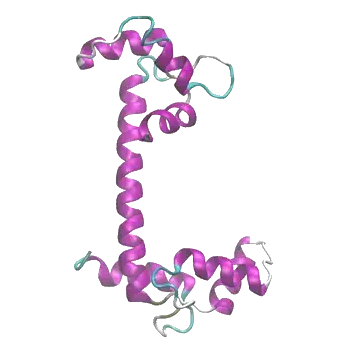

A PROTAC changing shape in chloroform, from my molecular dynamics simulations of PROTAC chameleonicity.

Calmodulin closing, steered along a collective variable found with my Perturb–Scan–Pull (PSP) method.
About me
Computational biochemist and molecular modeller working on AI for the life sciences
I'm Farzaneh Jalalypour, a researcher working at the interface of experimental molecular biology, computational chemistry and artificial intelligence. I study biological systems at the molecular level to understand how proteins function, how they change shape, and how mutations alter their behaviour. Alongside molecular simulation, I apply AI across the life sciences, from predicting protein structures and complexes to building literature-derived databases with language models and supporting the design of clinical trials.
My work combines method development with applied studies. I developed the Perturb–Scan–Pull approach for driving conformational change and use network and clustering analyses to map protein dynamics. In parallel, I contribute to drug design projects, characterising allosteric lipid binding sites in ion channels, targeting oncogenic RAS signalling, and modelling PROTAC-mediated ternary complexes with generative AI. From 2021 to 2024 I was a member of the GROMACS open-source software team and the BioExcel Center of Excellence at KTH, where I supported the user community, wrote official tutorials and tested new releases. I am currently a WASP Postdoctoral Researcher and Lecturer in the Data Science and AI division at Chalmers University of Technology.
Where I'm heading
I am currently looking for research positions.
Research experience
2024–present
WASP Postdoctoral Researcher and Lecturer
AI Laboratory for Molecular Engineering (AIME), Data Science and AI division, Department of Computer Science and Engineering, Chalmers University of Technology, SE · supervisor: Asst. Prof. Rocío Mercado
Generative AI, molecular simulation and machine learning for targeted protein degradation; LLM-assisted literature extraction; teaching data science and AI at bachelor's and master's level.
Nov 2024
Visiting Researcher
Centre Blaise Pascal de Simulation et de Modélisation Numérique (CBPsmn), École normale supérieure de Lyon, FR · host: Prof. Paulo Cesar Telles de Souza
Coarse-grained and all-atom simulations of PROTAC-mediated degradation.
2021–2024
Postdoctoral Researcher
Molecular Biophysics Stockholm, Department of Applied Physics, Science for Life Laboratory (SciLifeLab) and KTH Royal Institute of Technology, SE · supervisor: Prof. Erik Lindahl
Molecular simulations of lipid binding in ligand-gated ion channels; member of the GROMACS open-source and BioExcel teams.
Feb–Mar 2020
Research Internship (HPC-Europa3 grant)
PDC Center for High Performance Computing, KTH Royal Institute of Technology, SE
Fully funded short research visit through the HPC-Europa3 Transnational Access Programme, running large-scale molecular simulations on PDC supercomputers during my PhD.
2010–2016
Research Assistant
Molecular Biology Wet Lab, Tabriz University of Medical Sciences, IR
Antibody engineering, cloning and protein expression, and molecular diagnostics.
Education
PhD
2017–2021
PhD, Molecular Biology, Genetics and Bioengineering (Computational Biochemistry)
Molecular Modeling and Simulation Lab, Sabancı University, TR
Thesis: Developing new applications for perturbation response scanning method to study conformational modulation of globular proteins.
MSc
2010–2013
MSc, Cellular and Molecular Biology
Azarbaijan Shahid Madani University and Tabriz University of Medical Sciences, IR
Thesis: Cloning and expression of the variable regions of anti-EGFR monoclonal antibody in E. coli for production of a single chain antibody.
MATLAB and Python; TensorFlow, PyTorch, scikit-learn and RDKit; supervised learning, clustering, community detection, deep learning and transfer learning; LLMs and generative AI, including RAG, agentic workflows, fine-tuning and embeddings; protein structure prediction with AlphaFold3 and Boltz-1; recommender systems
Molecular modeling and simulation
Drug molecules; soluble and membrane protein simulation; GROMACS, NAMD and AMBER; all-atom and coarse-grained (Martini) simulation; enhanced sampling; perturbation response scanning and network analysis; molecular modeling libraries
Wet lab
Gene cloning and protein expression; antibody engineering; RNA and DNA extraction and purification; PCR and RT-PCR; plasmid transformation; SDS-PAGE, Western blotting, ELISA, immunoprecipitation and protein purification; mammalian cell and tissue culture; spectrophotometry and optical microscopy; microbiological techniques (bacterial culture, staining, antibiograms); fluorescence microscopy and imaging analysis
Graphic design
Procreate, Vectornator, Adobe Photoshop
Other tools
Git/GitLab, Databricks, Microsoft Azure, Canvas, Jupyter, SQL, HPC and Linux
Languages
English (fluent), Turkish, Swedish (beginner)
Supervision experience
2025–2026
MSc thesis · industry
AI-powered recommender system for clinical trial protocol design
Chalmers University of Technology, SE · with AstraZeneca and Evinova
2025
MSc internship
A machine learning perturbation–clustering framework for conformational space exploration
Chalmers University of Technology, SE
2024–2025
MSc thesis
Predicting PROTAC-mediated ternary complexes with AlphaFold3 and Boltz-1
Chalmers University of Technology, SE · published in Digital Discovery
2018–2019
Undergraduate research
Allosteric modulation of protein dynamics with perturbation response scanning
Sabancı University, TR
2018–2019
Project course
PROJ 201 student projects
Sabancı University, TR
Teaching experience
2024–present
Lecturer · Bachelor's level
Introduction to Data Science and AI (DAT565/DIT407)
Chalmers University of Technology, SE · about 250 students per study period
Redesigned modules 2 and 4 with new lectures, tutorials and code examples; designed a module and its written exam. Covers the data science process in Python, regression, classification, clustering and AI ethics.
Feb 2026
Lecturer · Master's level
Design of AI Systems (DAT410) — module "AI in Health and Medicine"
Chalmers University of Technology, SE · about 100 students
A new module on protein structure prediction (AlphaFold), clinical-trial recommendation and generative molecular design (REINVENT), with attention to data quality, validity, ethics and limitations.
2023
Workshop trainer · PhD and researcher level
GROMACS molecular dynamics simulation
BioExcel, KTH Royal Institute of Technology, SE
2018–2020
Teaching assistant · Master's and PhD level
Scientific and Technical Communication (GR 555E)
Sabancı University, TR · advised more than 200 graduate students on writing and presenting
2017–2018
Teaching assistant · Bachelor's level
Linear Algebra (MATH 101)
Sabancı University, TR
2010–2014
Lecturer
Molecular biology laboratory methods; biology team leader
Tabriz University of Medical Sciences and University of Tabriz, IR
Pedagogical training and development
2026
University Teaching and Learning (CLS926, 3 hp)
Chalmers University of Technology, SE
2026
Diversity and Inclusion for Learning in Higher Education (CLS930, 2 hp)
Chalmers University of Technology, SE
2024–2026
Course development
New module "AI in Health and Medicine"; redesign of modules 2 and 4 in DAT565
Updated lectures, tutorials, examples and learning activities for interdisciplinary student groups
2025
Women's Leadership Program (40 hours)
Lauri.co and GENIE, Chalmers University of Technology, SE
Official GROMACS tutorial; ongoing contribution to the GROMACS Tutorial Suite
Spring 2018
Sabancı University
Academic Practices and Development 3 (GR 503E)
Teaching observed by a supervisor at least once per semester, with feedback on teaching performance and further professional development activities.
Fall 2017
Sabancı University
Academic Practices and Development 2 (GR 502E)
Reflection on the first semester of teaching, course planning, teaching with technology and grading, with continued teaching assistance in a university course.
Spring 2017
Sabancı University
Academic Practices and Development 1 (GR 501E)
Workshops on the principles of teaching and learning in higher education, best practices and ethics in teaching, and research methods, followed by assisting in a university course to apply them.
Projects
Applied AI with real clinical data, plus machine learning models built from scratch.
Chalmers University of Technology · 2024–2026
Introduction to Data Science and AI
Course covering the data science process in Python, core methods like regression, classification and clustering, classical AI and machine learning, and AI ethics.
Sep 2025WASP travel grant· research visits to RIKEN and the University of Osaka, JP
Jun 2021EMBO practical course grant· Integrative Modelling of Biomolecular Interactions
Mar 2021HPC-Europa3 travel grant· short talk, ES (held online)
2020HPC-Europa3 fully funded research visit· PDC Center for High Performance Computing, KTH
2017–2021Merit-based full PhD scholarship· Sabancı University
Scientific service
Ongoing
Editorial
Review Editor
Journal of Chemical Theory and Computation · Frontiers in Molecular Biosciences · Frontiers in Big Data · Frontiers in Artificial Intelligence
2021–2024
Open-source software
GROMACS Open-Source Software Team
KTH Royal Institute of Technology, SE
Forum administrator answering questions and supporting users in the GROMACS community; prepared tutorials and educational material; designed and ran user surveys and reported the results to the development team; tested new features before software releases.
2021–2024
Research infrastructure
BioExcel Center of Excellence for Computational Biomolecular Research
KTH Royal Institute of Technology, SE
Dissemination, community engagement and outreach supporting BioExcel's mission to improve biomolecular simulation research and training across Europe, helping researchers adopt advanced computational tools.
Publications
Peer-reviewed articles, preprints and teaching materials. The full, up-to-date list is on Google Scholar.
11peer-reviewed papers
4first-author papers
64citations (Web of Science)
5h-index
Citation counts from Web of Science, autumn 2026.
Preprints and other publications
2026
Chameleonicity beyond compactness: conformational persistence and passive permeability across 20 PROTAC ensembles
The effect of conjugated linoleic acid (CLA) on inflammatory factors in non-alcoholic fatty liver disease (NAFLD): a randomized controlled clinical trial
R. Abedi, S.-R. Aref-Hosseini, M. Khoshbaten, M. Ebrahimi-Mameghani, H. Jamali Laleh, F. Jalalypour, B. Kabir Mamdouh
![Coursera Specialization Certificate seal]()